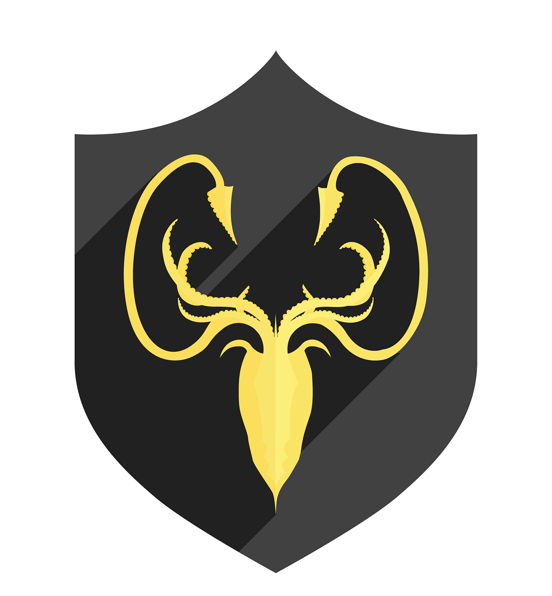
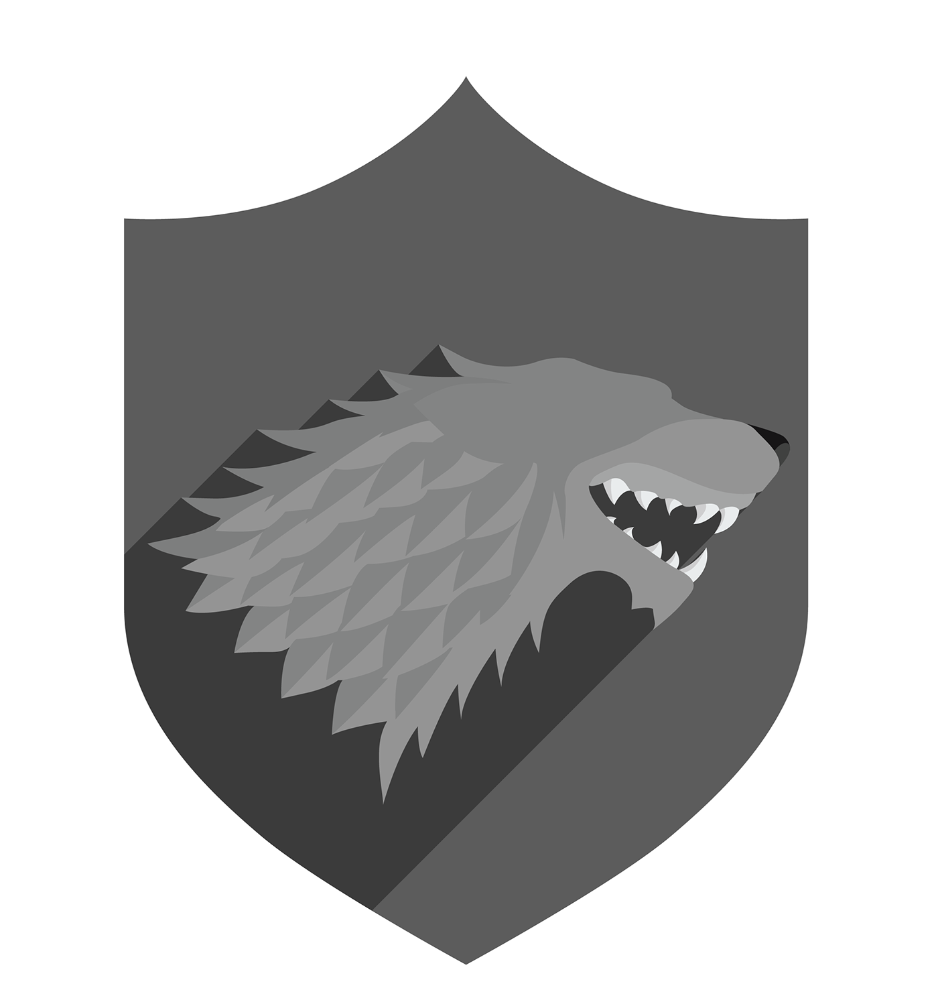
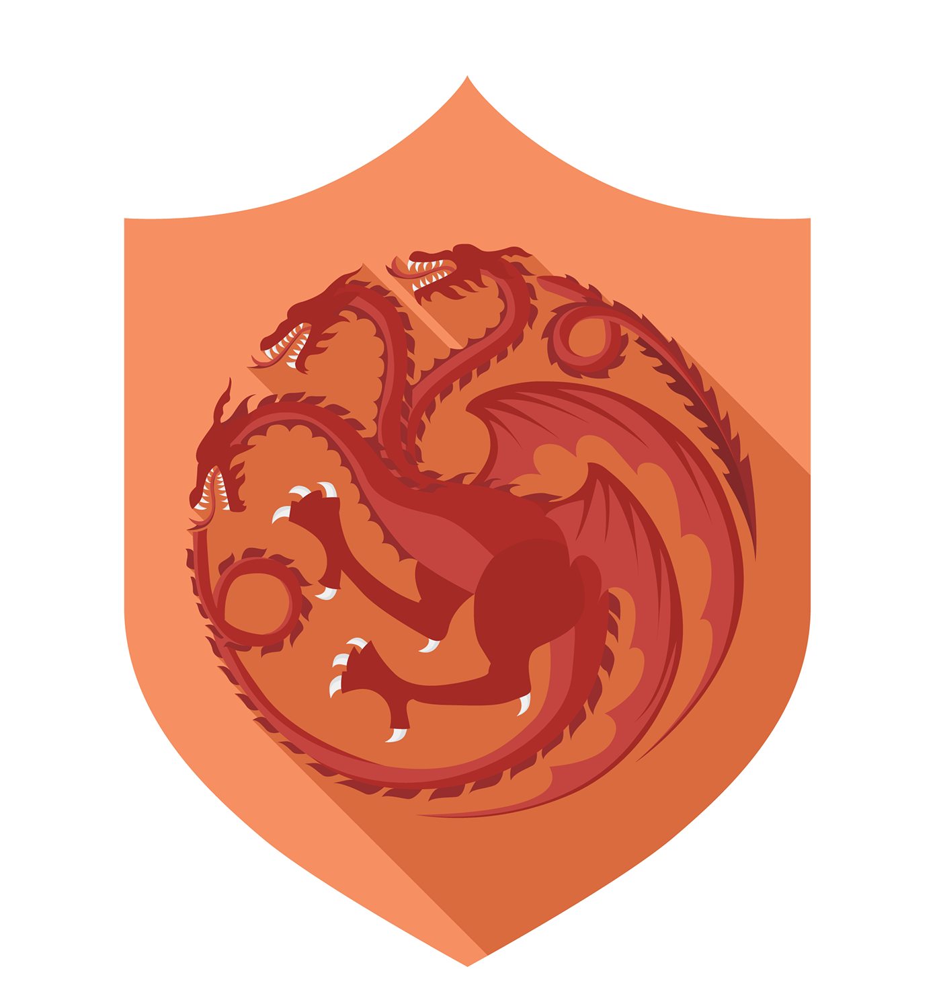

Cavaleiro
Medieval
O cavaleiro medieval era parte da divisão social dos nobres e tinham,
durante a Idade Média, que proteger os feudos e manter a segurança.
Durante a Idade Média, a figura do cavaleiro medieval era bastante significativa. Tidos como os
principais defensores dos feudos, os cavaleiros passavam a vida inteira se dedicando à treinamentos
e investindo em armadura e um bom cavalo.
Apesar da importância adquirida ao longo do período medieval, aos poucos, os cavaleiros foram
perdendo espaço para as armas de fogo e exércitos que se formaram durante as guerras. Na época
medieval, a sociedade feudal era dividida em três segmentos: o clero, os servos e os nobres.
Os cavaleiros, neste caso, eram parte do grupo dos nobres, composto por indivíduos destinados à
guerras. Ou seja, a função dos nobres era permanecer constantemente nos confrontos medievais. Sendo
assim, quem compunha a cavalaria medieval, geralmente, eram os filhos dos nobres que não herdavam
bens familiares.
Geralmente, na Idade Média, quando a família era cheia de herdeiros, o único que herdava algum
bem
era o primogénito. A prática, denominada primogenitura, era comum para que os bens patrimoniais da
família não fossem divididos.
Armadura de Placa
A armadura de placa evoluiu a partir da cota de malha, com vários estilos intermediários, a
partir da metade do século XIII.
Um casaco de metal, por exemplo, era um simples ponto de grandes placas retangulares de
metal, unidas por um cinto. Estas e as simples placas torácicas e dorsais podiam ser usadas por
cima da cota de malha
Armadura de escamas elaborada com pequenas peças de ferro sobrepostas, unidas a um tecido ou
couro, semelhantes às escamas dos peixes.
Elmos
O elmo constituía um elemento necessário para a proteção da cabeça e face. Elmos cônicos eram
fabricados a partir de uma só folha de aço ou ferro, algumas vezes com tiras internas como um
reforço extra.
Por volta de 1200, os elmos tornaram-se mais sofisticados e feitos de cilindros
de metal com uma faixa protetora para o nariz ou uma máscara facial completa. Algumas versões
possuíam uma proteção para o pescoço. Na metade do século XIII, o elmo completo, que envolvia a
cabeça toda, era o mais comum, possuindo uma fenda horizontal única para a visão.
Tais elmos eram reforçados pela adição de faixas verticais extras e o modelo com a parte de
cima plana era
mais popular, mesmo se oferecesse menos proteção para um golpe que o modelo cônico.
Um simples capacete de ferro para o crânio funcionava como uma alternativa e, na época, era
conhecido como bastinet ou cervelliére. No início do século XIV, os elmos readquiriram a forma
cônica e se
prolongavam até o pescoço, com visores que podiam ser removidos. Este tipo também era conhecido
como bastinet.
Escudos
Os primeiros escudos para cavaleiros (sem considerar os romanos) foram aqueles em forma de
longas pipas, cuja fama veio dos normandos, os quais, então, reduziram-no em tamanho, e com o
passar do tempo, assumiram a forma reta clássica na parte de cima e pontiagudo nas bordas
inferiores em direção a um tipo de escudo pontiagudo familiar em heráldica.
Os escudos eram feitos de pranchas de madeira cobertas com couro ou pergaminho espesso em
ambos os lados.
Eram eles o lugar perfeito para exibir o brasão de uma família e, por isto, eram frequentemente
pintados. Em geral mediam 1,5 cm de espessura (0,6 polegadas), mas a falta de espécimes de
batalha sobreviventes, faz com que as afirmativas a respeito de dimensões e materiais sejam
bastante difíceis.
Os escudos eram transportados utilizando-se três correias (brases ou
enarmes), rebitadas para o interior e um enchimento acolchoado que amortecia os golpes
desferidos contra o braço que transportava o escudo.
Treinamento
O pajem, fase iniciada quando o jovem tinha apenas 7 anos, era a fase constituída por funções
específicas que deveriam ser cumpridas.
Em síntese, era dever de um pajem acompanhar os membros da realeza (príncipe, dama, senhor feudal),
para prestar-lhes serviços. Além disso, era nessa fase que os conhecimentos iniciais sobre manejo de
armas eram adquiridos.
Em seguida, de pajem, o jovem se transformava em escudeiro, aos 12 anos de idade. Como
escudeiro, o
jovem deveria acompanhar os senhores aos campos de batalha para que os conhecimentos sobre manejo
com espada fossem aprimorados.
Como parte do treinamento, também era ensinado aos escudeiro como ter condição física em lutas, bem
como nos desafios de esgrima e corridas à cavalo.
Assim que a fase de escudeiro era completada, entre os 18 e 20 anos, era chegada a hora da
passagem
da juventude para a fase adulta. Essa passagem simboliza a transição entre escudeiro para
cavaleiro.
Formação do cavaleiro medieval
Para que a transição ocorresse, os senhores que haviam treinado os jovens realizavam um ritual,
chamado de ritual de sagração do cavaleiro. Em síntese, a cerimônia era de grande relevância para a
sociedade feudal e, em alguns casos, até o rei estava presente.
Uma noite antes do grande dia, os jovens precisavam ficar em jejum e tinha que passar a noite
vigiando as armas que, mais tarde, seriam utilizadas nos confrontos. Logo, assim que o dia raiava, o
futuro cavaleiro era desafiado em simulações, que assemelhavam à combates, para que pudessem
demonstrar tudo o que aprenderam.
Além disso, o senhor do cavaleiro fazia um juramento, para firmar a transição entre escudeiro e
cavaleiro. Com isso, o senhor dava um tapa no rosto, no ombro na nuca do aspirante à cavaleiro e
dizia a seguinte frase: “Eu te faço cavaleiro em nome do Padre e do Filho e do Espírito Santo, de
São Miguel e de São Jorge. Sê valente, destemido e leal“.
Em seguida, os jovens, já cavaleiros, subiam em seus cavalos e saiam cavalgando. Terminado todo
o processo para se tornar um cavaleiro medieval, os membros de origem nobiliárquica passavam a
integrar as forças responsáveis pelo feudo.
Em situações de guerra, por exemplo, dificilmente os cavaleiros sobreviviam sem o seu cavalo.
Além disso, os cavaleiros eram organizados em postos diferenciados de batalha, que serviam para
manter melhor a vigia dos feudos. Caso um cavaleiro ficasse sua montaria, a morte era quase
certa.
- 
- 
- 